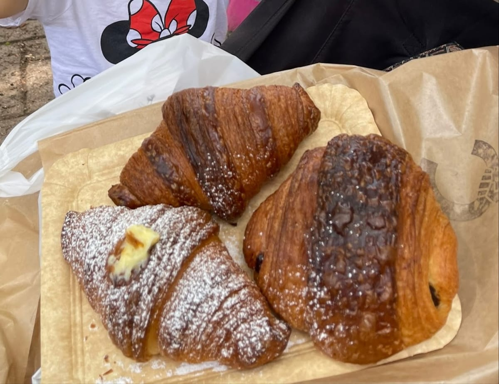
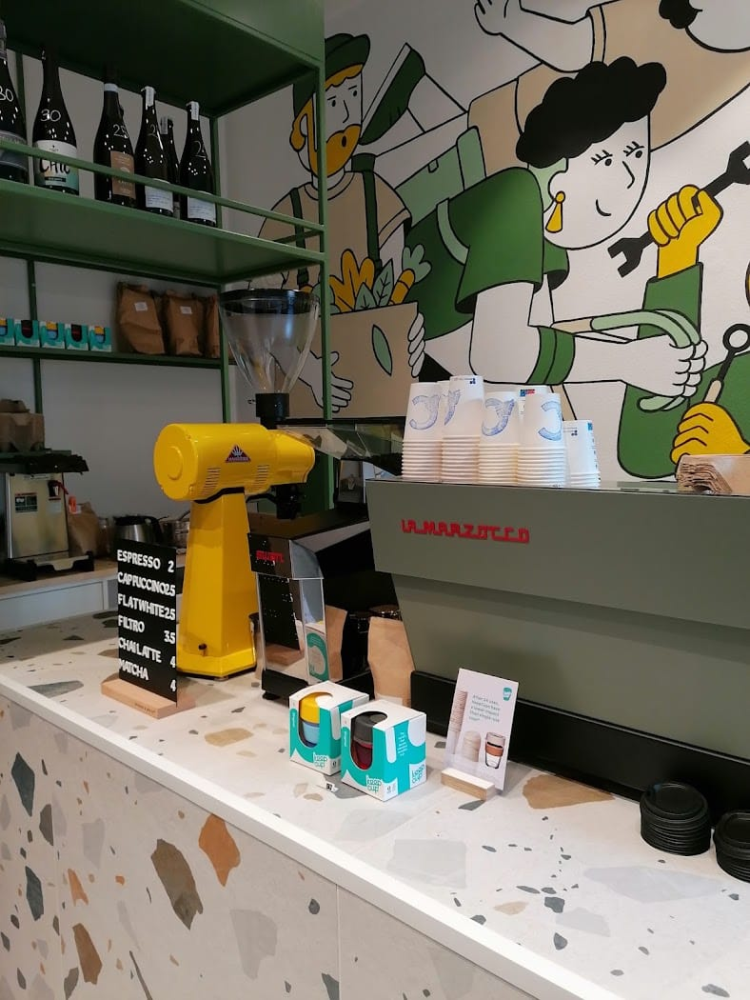
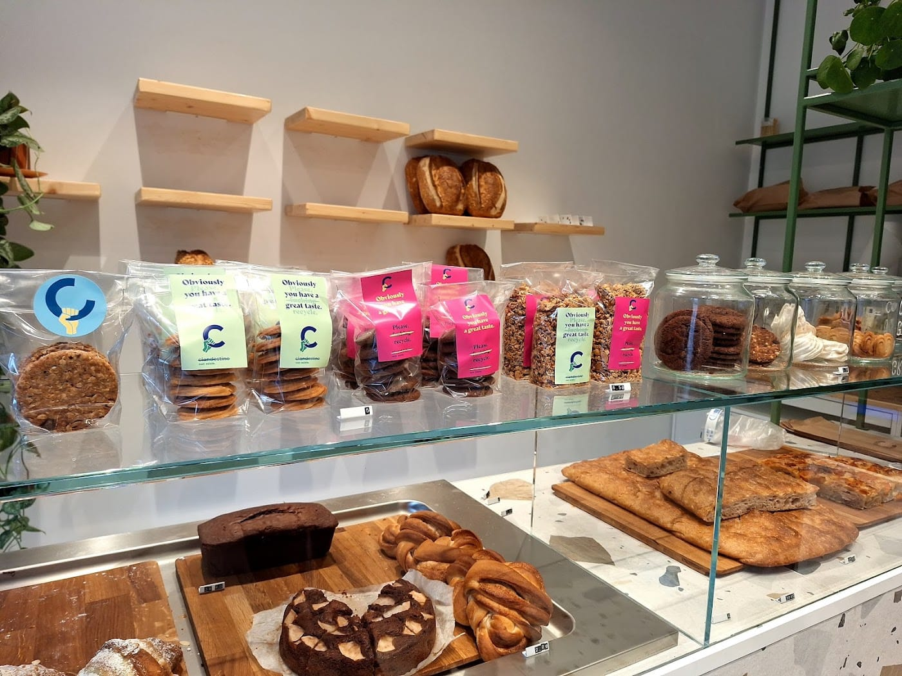
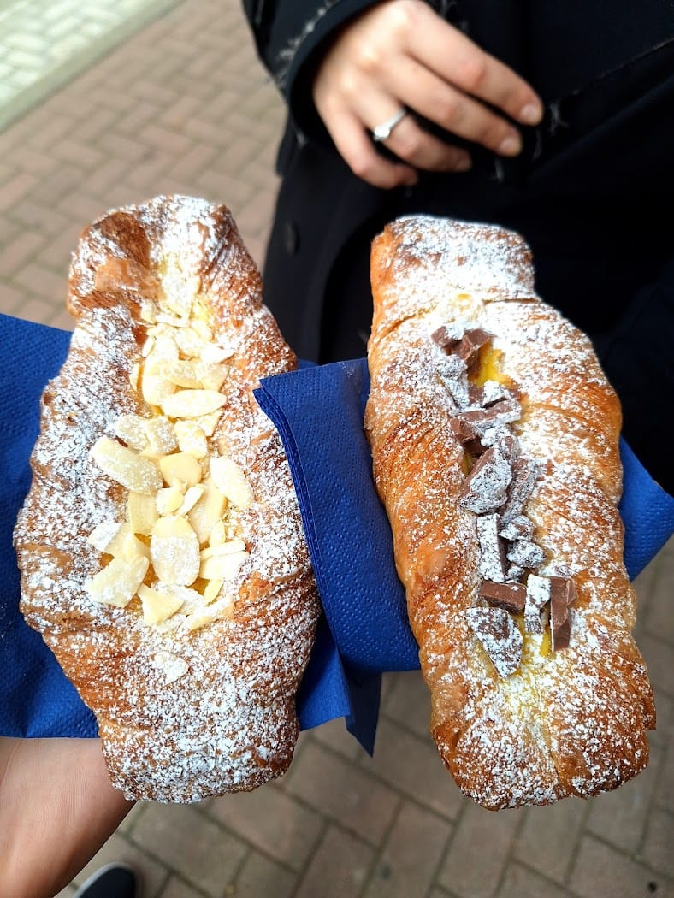
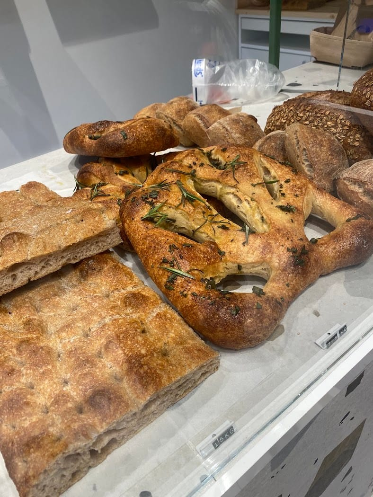
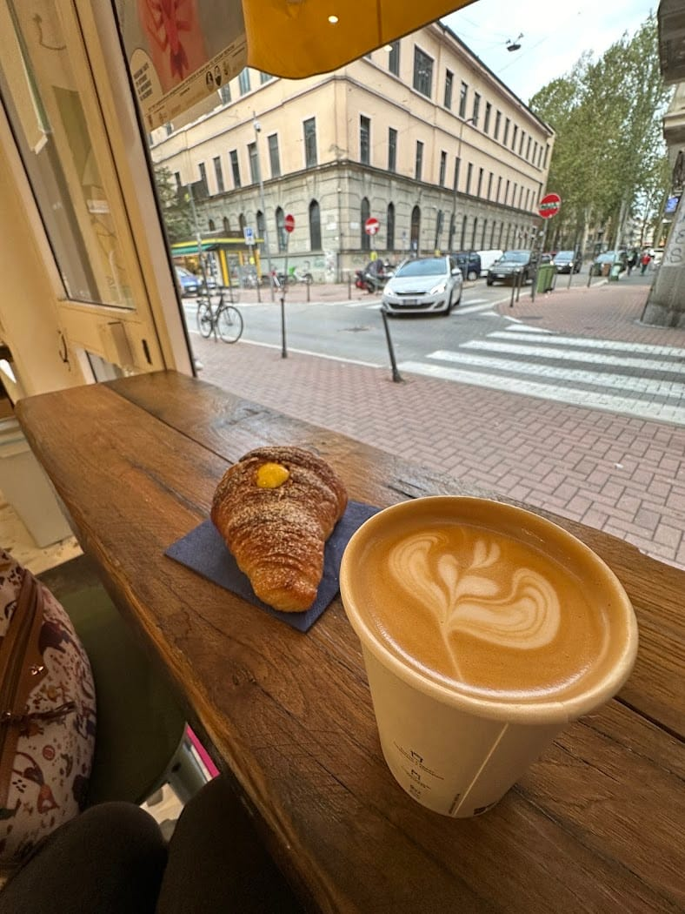
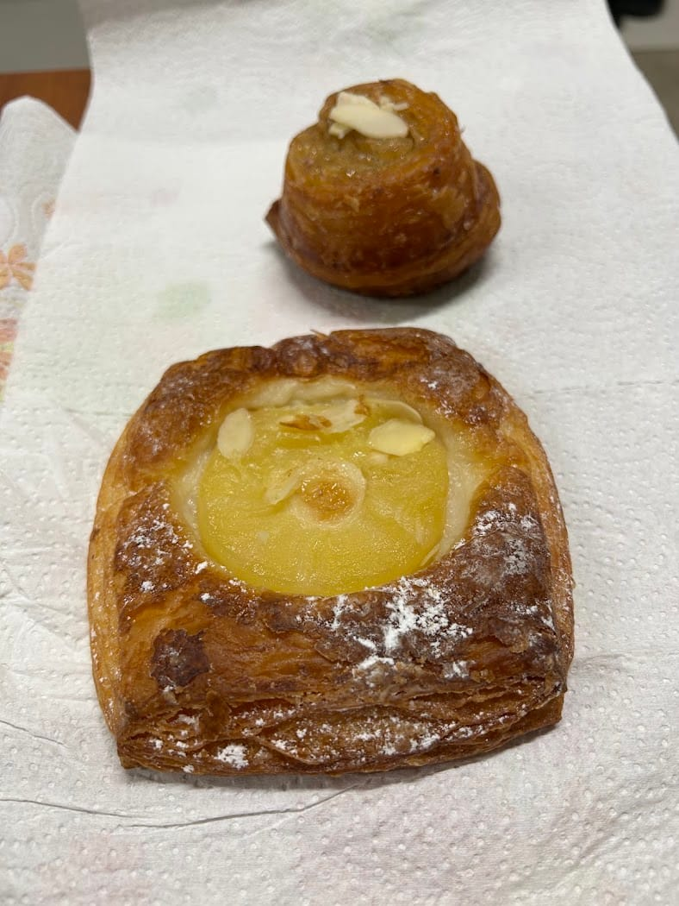
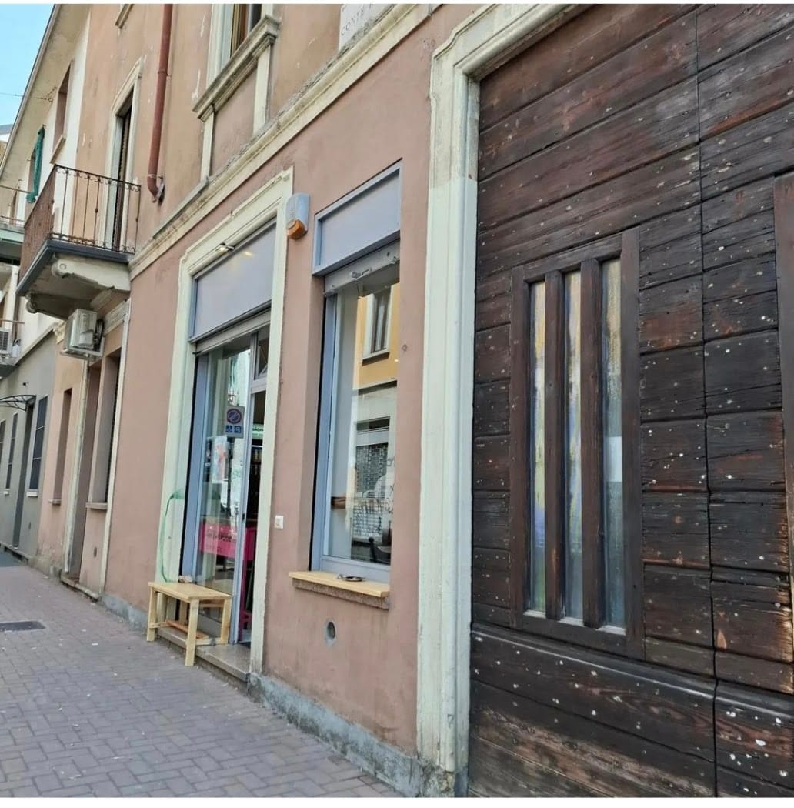

// Via Conte Rosso 18 · Lambrate · dal forno di Onest
Eppure è lì, in Via Conte Rosso: un micro-forno volutamente diverso dal solito. Pane, pizza, focaccia, pasticceria e specialty coffee — con una forte identità che si vede in tutto.
Controllo orari… · ★ 4,5 / 187

Il manifesto
Nato dalla cucina di Onest, Clandestino non esiste porta a Lambrate un'idea di forno che si vede in tutto: dall'estetica ai prodotti. Pane a lunga lievitazione, pizza, focaccia e una pasticceria che non passa inosservata.
Piccolo, molto conosciuto — quindi sì, ogni tanto un po' di coda. Ma è proprio quella la prova che il clandestino, in fondo, esiste eccome.

Cosa c'è
Lievitazione naturale, crosta e mollica come si deve. Il pane di tutti i giorni, fatto sul serio.
Al taglio e in teglia, farcite di stagione. La focaccia è già un piccolo classico.
Cornetti, danesi, lievitati e dolci dalla forte identità. Dolce, ma non scontato.
Caffè di qualità ed estrazioni curate. Da bere al volo o seduti alla finestra.
Il banco cambia ogni giorno. Segui @clandestinononesiste per l'infornata del momento.
Gallery






Le voci
Forno volutamente diverso dal solito. La forte identità si vede in tutto, dall'estetica ai prodotti. Per ora ho provato solo i dolci: sicuramente da tornare.
Francesco Panzera · ★★★★★
Piccolo forno con prodotti ottimi: dal pane, alla pizza, passando per la pasticceria. Il locale è giustamente molto conosciuto, quindi aspettatevi un po' di coda.
Marianna Pompo · ★★★★★
Non lo conoscevo, provato per caso: focacce e prodotti da forno davvero buoni. Anche il caffè è ottimo. Un indirizzo da tenere a mente a Lambrate.
Delia Monacò · ★★★★☆
Dove siamo
FAQ
In Via Conte Rosso 18, a Lambrate (Milano).
Da martedì a venerdì 8–13 e 16–19, sabato e domenica 9–13. Lunedì chiuso.
Pane, pizza, focaccia, pasticceria e specialty coffee — un forno volutamente diverso dal solito.
Passa in forno o chiamaci allo 02 4547 1097. Ci trovi anche su Instagram, @clandestinononesiste.